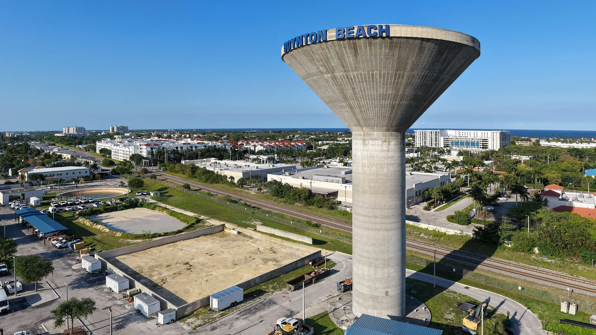

Em Boynton Beach, as casas à venda vão de apartamentos e villas mais antigos até grandes condomínios 55+, casas de família em condomínios fechados e algumas casas perto do Intracoastal. As vendas recentes colocam a mediana da cidade perto de US$ 300 mil, mas metade das vendas fica entre uns US$ 160 mil e US$ 460 mil, então o preço depende muito do que você procura. O Rui Cunha, corretor brasileiro e Broker da Royal Star Corp, atende Boynton Beach a partir do escritório em Coral Springs, no norte de Broward.
Como é morar em Boynton Beach
Boynton Beach fica no condado de Palm Beach, entre Delray Beach, ao sul, e Lantana e Hypoluxo, ao norte. As pequenas cidades de praia Ocean Ridge e Manalapan ficam do outro lado do Intracoastal (Wikipedia). O órgão de estatística da Flórida estimou a população em 82.937 habitantes em 1º de abril de 2025 (Florida EDR).
A cidade tem praia pública própria, o Boynton Beach Oceanfront Park, mas a maioria das casas fica no interior, em condomínios planejados a oeste da I-95. Muitos desses condomínios do oeste usam endereço de Boynton Beach, mas ficam em área não incorporada do condado de Palm Beach; a prefeitura já estudou anexar dezenas deles (Palm Beach Post via AOL). Confira qual governo local (e qual imposto) vale para o endereço que você escolheu.
Para famílias brasileiras
O condado de Palm Beach está entre os condados dos EUA com mais imigrantes brasileiros (Migration Policy Institute). E a comunidade brasileira conhecida de Deerfield Beach e Pompano fica a poucos minutos ao sul. Se você ainda não tem Social Security, existe o financiamento com ITIN, sujeito à aprovação do banco.
Bairros e condomínios 55+
Boynton Beach é uma das regiões mais conhecidas do sul da Flórida para quem tem 55 anos ou mais. O 55places lista mais de 100 comunidades 55+ perto da cidade (55places), entre elas:
- Indian Spring. Cerca de 1.901 unidades, em geral de US$ 200 mil a US$ 500 mil.
- Palm Isles. Cerca de 2.367 unidades, em geral de US$ 200 mil a US$ 400 mil.
- Boynton Leisureville. Cerca de 892 unidades, em geral na faixa dos US$ 200 mil.
- Comunidades Valencia. Da construtora GL Homes, incluem a Valencia Reserve (cerca de 1.043 casas construídas entre 2009 e 2014, só revenda) e a Valencia Grand, com preços de US$ 1 milhão a US$ 2 milhões (55places).
Fora do 55+, peça ao Rui as vendas recentes nos bairros de família.
Mercado imobiliário em Boynton Beach
A Resideline registrou 872 vendas em Boynton Beach nos seis meses até 3 de outubro de 2026. O preço mediano foi de US$ 295 mil, e a metade do meio das vendas ficou entre US$ 162 mil e US$ 460 mil (Resideline). Os imóveis levaram em média 46 dias para entrar em contrato.
A diferença é grande, e os números dos condomínios do oeste (fora da cidade, mas com endereço de Boynton) podem ser bem diferentes. Peça ao Rui uma comparação atualizada antes de fazer a oferta.
Cuidados práticos: condomínio, seguro e enchente
Prédios mais antigos. Prédios de três andares ou mais precisam de inspeção periódica aos 30 anos, ou aos 25 se a prefeitura/condado exigir (SB 154, 2023), além de estudo de reservas estruturais com reservas financiadas (Rimkus). Muitos prédios 55+ de Boynton são dos anos 1970 e 1980. Antes da oferta, peça o estudo de reservas, o orçamento, a situação das inspeções e o histórico de cobranças extras.
Seguro e enchente. Imóveis perto do Intracoastal e em áreas baixas têm mais risco de enchente. A nova tabela da FEMA aumentou mais o seguro nas áreas costeiras de Broward e Palm Beach (WLRN). Quem tem seguro pela Citizens vai precisar de cobertura contra enchente até 2027 (News4JAX). Faça a cotação antes de assinar.
Impostos. Boynton Beach fica em Palm Beach, não em Broward, então a alíquota é diferente. Se for sua residência principal, você pode ter direito à isenção homestead. Converse com um contador.
Escolas
Boynton Beach é atendida pelo distrito escolar do condado de Palm Beach. A Boynton Beach Community High School fica na 4975 Park Ridge Blvd (Palm Beach County Schools). Confirme a escola do endereço com o distrito.
Como se locomover
A I-95 corta a cidade, e Boynton Beach tem estação própria do Tri-Rail, o trem que vai até West Palm Beach e, ao sul, até Miami (Wikipedia). Faça o trajeto no horário de pico antes de decidir.
Comprar com o Rui em Boynton Beach
Ele ajuda você a comprar casa na Flórida ou a vender seu imóvel. Faça as contas na calculadora de financiamento, veja quanto custa uma casa na Flórida e compare com Delray Beach.
Perguntas frequentes
Qual é o preço mediano das casas em Boynton Beach?
A Resideline apontou mediana de US$ 295 mil nos seis meses até 3 de outubro de 2026, com 872 vendas. Metade das vendas ficou entre US$ 162 mil e US$ 460 mil, então um apartamento 55+ e uma casa de família podem ter preços bem diferentes.
Boynton Beach é boa para quem tem mais de 55 anos?
Tem muitas opções. O 55places lista mais de 100 comunidades 55+ perto da cidade, da Boynton Leisureville, na faixa dos US$ 200 mil, até a Valencia Grand, de US$ 1 a 2 milhões.
Endereço de Boynton Beach é sempre dentro da cidade?
Não. Muitos condomínios do oeste usam endereço de Boynton Beach, mas ficam em área não incorporada do condado de Palm Beach. Isso muda os serviços locais e parte do imposto, então confira o registro no property appraiser.
Dá para comprar casa em Boynton Beach sem Social Security?
Muitos compradores usam o financiamento com ITIN, sempre sujeito à aprovação do banco. Alguns condomínios 55+ e HOAs também têm aprovação própria. Veja o guia de financiamento com ITIN ou fale com o Rui.
Fale com o Rui
Pensando em Boynton Beach? Peça ao Rui uma comparação de preços atualizada dos condomínios que você gostou.